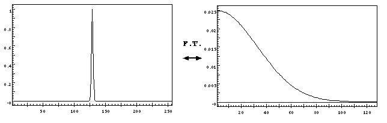
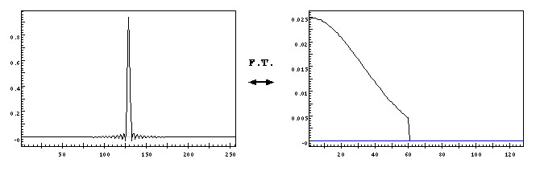
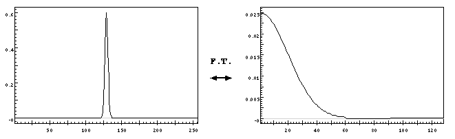
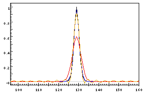

This shows a Gaussian line profile of width 3 points (fairly typical
for
optimally-sampled FT spectra ), together with it's (single-sided)
Fourier transform. It represents a typical line that has been
fully-resolved, and the Fourier transform of it is near zero at the
end of the data. Now imagine that we have not fully-resolved the line,
and have only sampled 120 points, instead of the 256 points started
out with. This can be imitated by setting all points in the transform
above 60 to zero with
data 60 256 0..

This shows the result. We have effectively observed the inteferogram
represented on the right, and the line is
ringing , as can be seen on the left. One common way of dealing
with this is to
filter the data -- i.e. multiply the interferogram with a
Gaussian or similar function to make sure that it is near zero at the
ends. This is the result of the command filter 4 60 4
on the under-resolved line:

The transform goes down to zero at the ends and the line is no longer
ringing. However the line is now broader, and the peak height is
lower. If we fit this line with
lsqfit ,
we will get a larger width than the original. A better way is to use a
filtered lsqfit instead. To do this, you must first
set the shape of the filter with:
lsqfit filter nrise ncut, where ncut is the cutoff
frequency of the interferogram and nrise is the width of a cosine bell
used to
mask the ends of the data to avoid extra ringing. A value
of nop/10 is suggested for a first attempt. The
parameter ncut can be omitted, and if it is Xgremlin will
determine it from parameters in the header file.

This shows the difference between filtering the data and then fitting
it with lsqfit, and fitting the data with lsqfit filter
The black curve is the original line. The yellow one is the
under-resolved line, and the blue line is a fit to this using lsqfit
filter. The red curve is a profile fitted to the line after it has
been filtered.
Of course the best way around the problem is to fully resolve the data when you take the original interferogram!